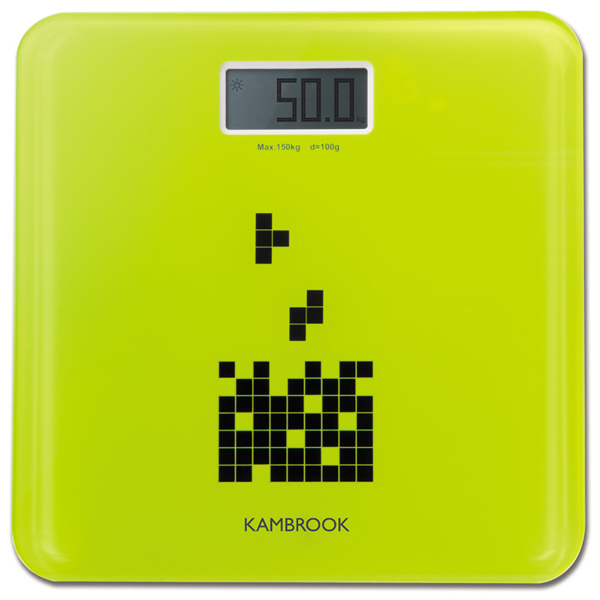
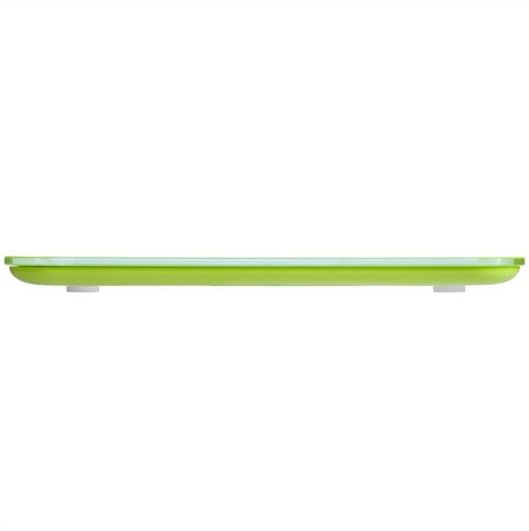
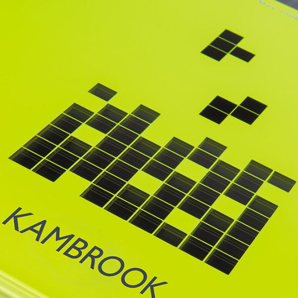
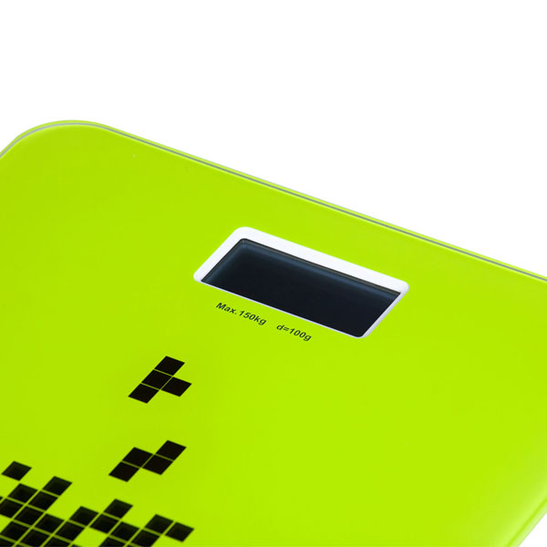

Весы напольные KSС306

Максимальный вес 150 кг.
Автоматическое включение/выключение.
Шкала деления: 0.1 кг.
Источник питания - энергия солнечного света или свет лампы внутреннего освещения.
Высокочувствительный датчик.
Ультракомпактный дизайн
Индикация работы солнечной батареи
Источник питания: Энергия солнечного света I = 200 люксов – порог светочувствительности.
Когда вы используете напольные весы в первый раз, позаботьтесь, чтобы весы располагались в хорошо освещенном месте. (Освещенность должна превышать 200 люксов.)
Солнечная энергия может обеспечить нормальную работу весов (полная индикация экрана и мигающий значок солнышка) при достаточном освещении в течение примерно 1 минуты.
Мигающий значок солнышка означает, что мощности солнечной батареи хватает для нормальной работы весов.
Солнечной энергии может оказаться недостаточно без искусственного освещения, поэтому в вечернее время или в темном месте лучше осветить весы в течение 1 минуты.
При достаточной освещенности (на балконе или вблизи окна) для нормальной работы может хватить 15–20 секунд освещения.
Выбор единицы измерения (кг/фунт)
- В режиме взвешивания нажмите кнопку единицы измерения, расположенную на задней стороне весов, для выбора требуемой единицы измерения.
- Установите требуемую единицу измерения перед взвешиванием (килограммы или фунты). В процессе взвешивания изменить ее не удастся.
Индикация ошибок
На дисплее высвечивается Err Индикация перегрузки Ваш вес превышает допустимый уровень 150 кг. Повторите попытку на дисплее высвечивается UNST Индикация неустановившегося веса в станьте на платформу ровно и не двигайтесь.
Технические характеристики
Диапазон взвешивания: 8–150 кг
Шкала деления: 100 г / 0,2 lb
Габариты (В.Ш.Г): 2.28.28 см
Комплектация
- Весы: 1 шт.
- Руководство по эксплуатации: 1 шт.
- Гарантийный талон: 1 шт.
- Гарантия 12 месяцев.